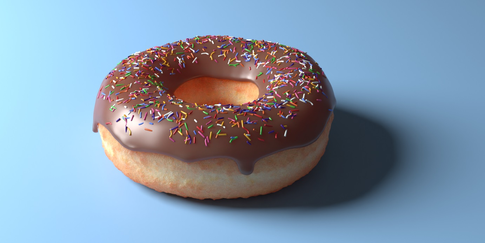
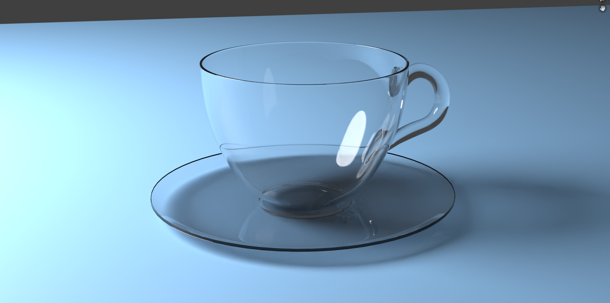
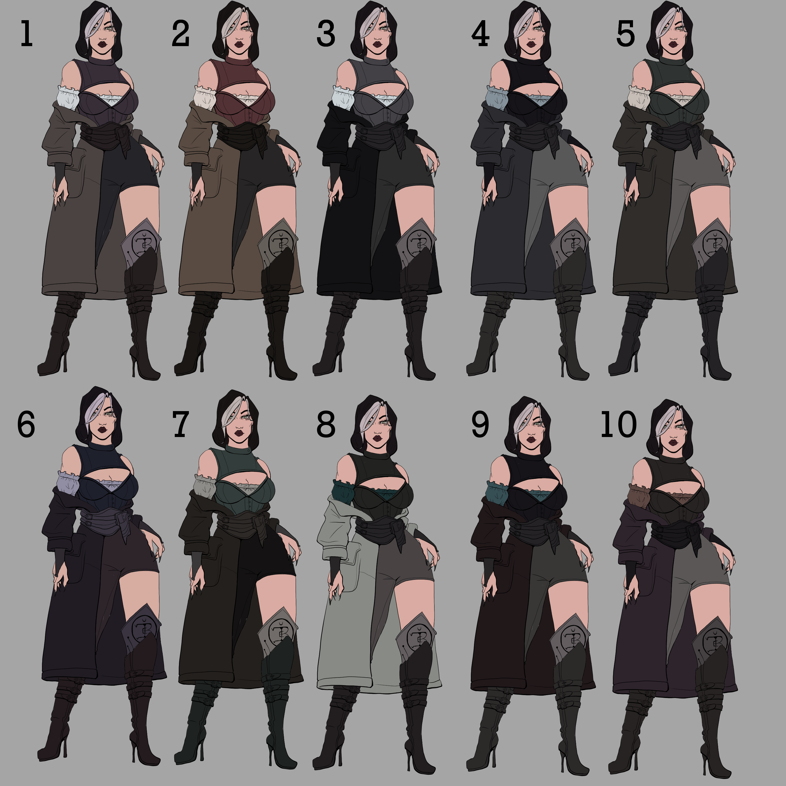
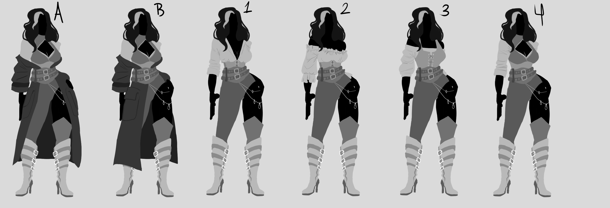
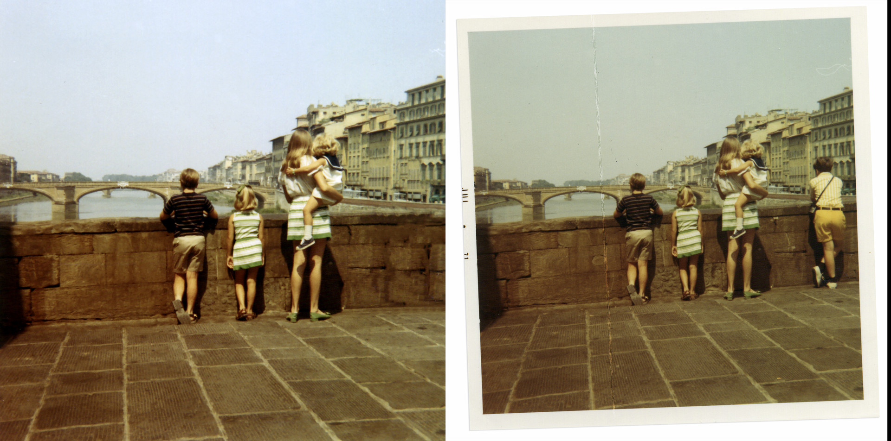

About Me
I am a Seminole State College student, currently pursuing my associate's degree for art.
I have been passionate for art since a young age, and got serious about it when I turned ten years old.
Although I've worked with two dimensional work all of my life, I've recently discovered my love for three dimensional art. Since then, I've changed my major to pursue the medium.
Aside from that, I've really come to love video games. they've helped me develop problem-solving skills, patience, and surprisingly, hand-eye coordination.
Some of my current favorite games incude:
- Overwatch 2
- Apex Legends
- Final Fantasy XIV
- ARK: Survival Evolved
Tessa Schrock
Digital Art Student
Work Samples
Below are a few of my work samples, ranging from work done in Photoshop and a few personal illustrations.





Skills
- Graphite Drawing
- Digital Illustration
- Web Development
- CSS
- Java Script
- 3D Asset Creation
- Animation
- Photo Manipulation
- UX/UI
- Digital Rendering
Software
- Clip Studio Paint
- Photoshop
- Autodesk Maya
- Blender